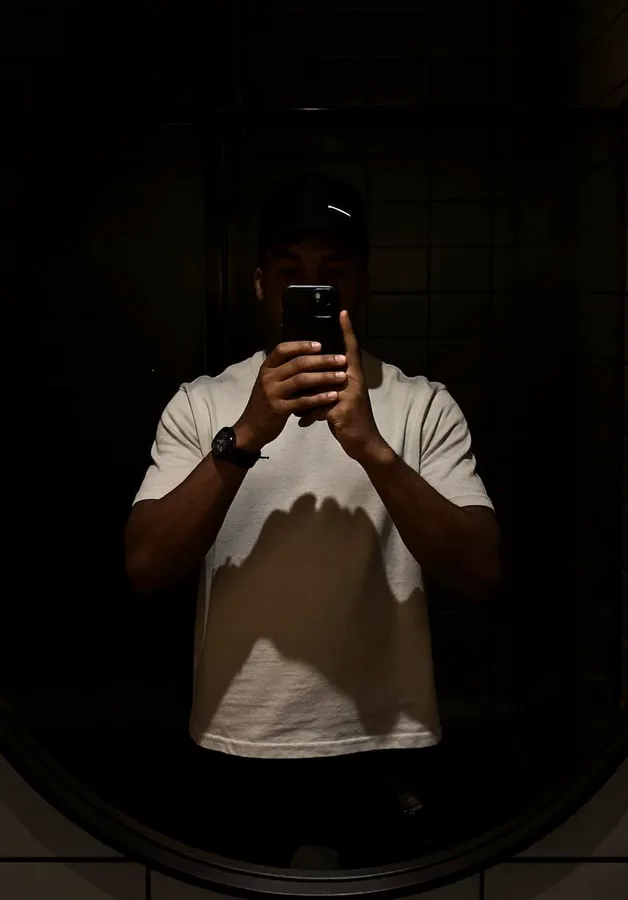

Open to roles and freelance work
I design products people actually understand.
Jaiye Oluwatishe Daniel. Product designer with 4+ years across fintech, SaaS, AI and Web3, plus the brand, motion and game work to match.
- 4+years designing
- 24projects, real screens
- WATLagos, works worldwide
- Opento product design roles
Designed with founders and teams at
Selected work
Real projects, sorted by what they are.
Pick a section and scroll inside the deck: one card opens and plays its screens, the rest stay folded. Every project has its own case study page.

About
Hi, I'm Jaiye. I start with the problem, not the pixels.
I've spent four years designing with founders, product managers and engineers: payments people trust, dashboards people read, and onboarding that doesn't need a manual. I lead discovery, map the system behind the screens, design the UI and stay through QA.
Outside product work I make brands, motion and game interfaces. They keep my craft sharp, and they come back into the product work.
- Roles I'm open to
- Product Designer, UI/UX Designer, design-led Product Manager
- Work setup
- Remote or hybrid · full-time, contract or freelance
- Time zone
- WAT (UTC+1), with overlap for Europe and the US East Coast
- Strongest in
- Fintech, SaaS dashboards, marketplaces, Web3
What I bring
Twelve skills, one way of working.
Understand the problem first, then design the simplest thing that solves it.
How I work
Four steps on every project.
As you scroll, the line fills and each step lights up.
- 01
Understand
I talk to users and the team, read the numbers and agree on the one problem worth solving.
Interviews · survey · problem statement - 02
Map
I turn what I learned into flows, a sitemap and the system behind the screens.
User flows · sitemap · system map - 03
Design
I design the UI, build the components and prototype the parts that move.
UI · design system · prototype - 04
Prove
I test with real people, fix what breaks and hand off files developers can build from.
Usability test · handoff · design QA
Experience
Four years with founders, PMs and engineers.
Pricing
Simple starting prices, in your currency.
Every card shows dollars, naira, pounds and euros. You get a fixed quote before any work starts, and you pay half to start, half on handoff.
Converted at today's rate
From the blog
Practical notes on product design.
Short, useful and written from real projects.
Taking projects for November
Let's build something good.
Tell me what you're building. I usually reply within a day.